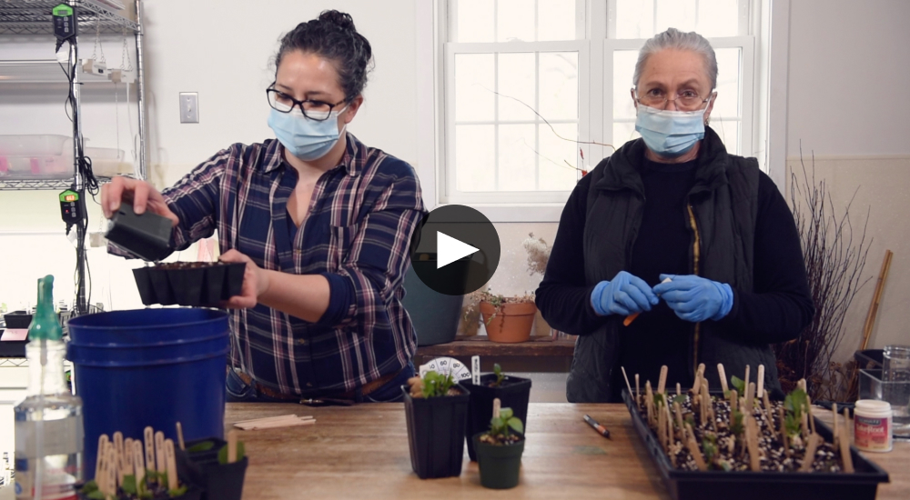
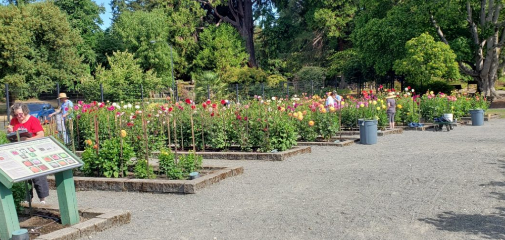

|
Hello dahlia friends!
We were so thrilled to see most of you at our
very first Zoom meeting last month with special
guest Paula Fisher from Garden Bee Flower Farm.
It was a wonderful presentation jam packed with
information and growing tips for both the dahlia
gardener and flower farmers alike. What an
incredible operation! We are so excited to share
with you that we are going to get to see more of
Paula as she is now a Y.D.S. member.
All winter and through the spring we have been
hovering over our computers on dahlia tuber
websites ready to purchase tubers including some
of the most sought after varieties. For the past
8 weeks our mailman has been busy delivering
boxes of tubers to our doorstep. We have sourced
tubers from around the country; from dahlia
farms, gardeners and other ADS clubs. It
includes over 400 varieties of and over 1,000
tubers. In addition, we have also received
nearly 500 tubers in donations from both Y.D.S.
members and other dahlia societies. We are
extremely grateful for their support.
In just three weeks we are looking forward to
celebrating our very first in-person club
meeting at Maplebrook Farmstead, a Y.D.S.
Growing Partner. Nancy Miller, also a Y.D.S.
member, grows flowers for bouquet and CSA sales
on this beautiful century-old farm, while her
daughter Hannah raises laying hens, goats, and
soon, dairy cows. We have been planning the
details and are thrilled to share that Joel
Betts, Conservation Planner with Worcester
County Conservation District will be with us to
demonstrate soil sampling and answer all your
soil questions. You won’t want to miss this
event.
Planting time will soon be here, and we are all
collectively looking forward to getting our
dahlias in the ground and growing, and we are
anticipating a great dahlia season together.
– Misty & Carol
|
|
Our Next Meeting
“Dahlia Questions & Conversation”
Sunday, May 16th, 11:00 am – 1:00 pm
(*log in at 10:45 to say hello and get settled.
Meeting will start promptly at 11:00am)
Link to Zoom Meeting: https://zoom.us/j/2863718795?pwd=TmJScGRoUCs0NWVJb2U5NzMrVlFpUT09
Meeting ID: 286 371 8795
Passcode: 37HqBM
Whether you are an experienced dahlia grower or
are new to growing dahlias, there will always be
something new to learn. Everyone has questions
about dahlias, and we invite you to come and
share yours! As a club, together we all have
decades of collective experience to draw on to
help every one of us learn more about our
favorite flower and have fun doing it! For those
that are newer to growing please bring your
questions, for those that have more experience
please join us to help each other.
In preparation, please send in your pictures
with your questions so we can share images and
help answer questions during the meeting.
Experience dahlia growers, please send in your
dahlia tip and pictures of your current dahlia
growing update as we would love to share.
Email
info@yankeedahilasociety.com
Subject: Dahlia Questions or Dahlia Tip
|
|

We're on YouTube
How to take Dahlia Cuttings
We’ve taken over 100 cuttings this year to
increase our club tuber stock! Check out
our video demo
with a few tips on how simple it is to try
yourself. At this time we are taking the last of
our cutting for this season and we will have
cuttings for sale at our first club meeting on
Sunday, May 30th.
|
|

American Dahlia Society
Consider joining the national club through
Y.D.S.
Get a discount on ADS membership for January -
December 2021 when registering through Y.D.S. To
register through Y.D.S., email
info@yankeedahliasociety.com
with the subject line “ADS Registration”
ADS is the national organization Benefits
include:
-
Access to the members-only section of the ADS
website, with in-depth information about
everything to do with dahlias
-
Quarterly bulletins packed with information
and updates from local chapters including
Y.D.S.
-
A copy of the Classification & Handbook of
Dahlias
-
Supporting the network of dahlia Shows,
Judging Roster & Show Reports
-
Support the mission of dahlia research, trial
gardens, classification system and seedling
evaluations
-
USA Individual Membership (1-person,
1-Classification book)
$24
-
USA Family Membership (2-people,
2-Classification books)
$27
|
|
Wood Stakes For Sale
Order beautiful, environmentally sustainable
wood stakes for your garden!
Will you need stakes to support your dahlias?
Y.D.S. is taking orders for locally milled 6
foot, 1” x 1” hardwood planting stakes. Order
now and have them in time for your garden.
Email us to reserve yours now at
info@yankeedahilasociety.com
Subject: Wooden Stakes.
Taking orders now through Sunday, May 30th. Pick
up/delivery will be arranged. Bundles of 12 six
foot stakes for $30.00 making them only $2.50
each. Thank you for supporting Y.D.S. and a
local Massachusetts Sawmill
|
|
Dahlia Tips
Begin the season with information and
organization
Learn about your soil before you add amendments
and fertilizers. A soil test is the first step
to understanding your soil composition; both
micro and macro nutrients, pH levels and provide
you with the details needed to add just the
right amount of nutrients while avoiding excess
application and runoff. Taking care of your soil
will in turn benefit your plants.
Label your tubers. Knowing the variety names of
all your dahlias will make growing and enjoying
them so much more rewarding, and is an absolute
must if you plan to enter them into a show or
exhibition.
Plan out your dahlia garden, and create a master
planting plan on paper or computer as each tuber
goes into the ground. This is a good backup plan
to have in case labels get lost or too faded to
read. Layouts come in handy when wanting to
reference the following year.
|
|
Sunday, May 30, 2021 Meeting
Come Celebrate our First In-person Club Meeting
Kick off YDS at Maplebrook Farmstead, one of our
growing partners
Our very first in-person meeting is scheduled on
Sunday, May 30, 2021 at Maplebrook Farmstead in
Sterling, MA. What better way to spend your
memorial weekend than joining us for our first
ever in-person club meeting! Bring your dahlia
enthusiasm and join us for some fun at the farm.
Joel Betts, Conservation Planner with Worcester
County Conservation District, will be with us to
demonstrate soil sampling and answer all your
soil questions. We will give demonstrations of
planting tubers, staking plants, taking
cuttings, dividing, and sharing tips to make
your growing season a success. Bring chairs and
a picnic lunch, and see the farm as we kick off
the growing season and meet our growing partners
and members. We will come back in October to see
what the farm looks like in full bloom.
Sunday, May 30th, 11:00 am – 1:00 pm
Location:
Maplebrook Farmstead, 155 Tuttle Road, Sterling, MA 01564
|
|
|
|
|